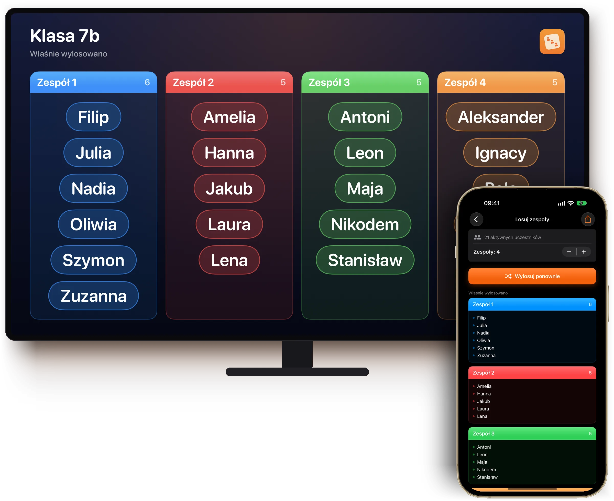
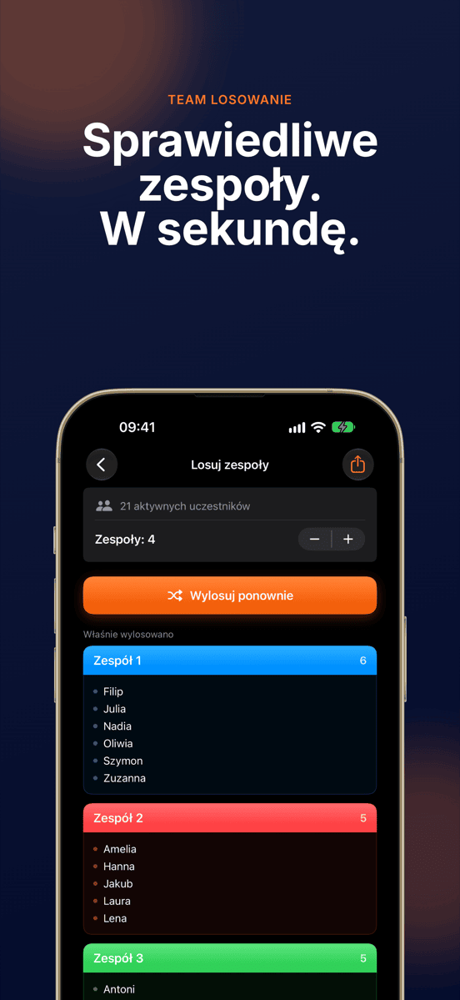
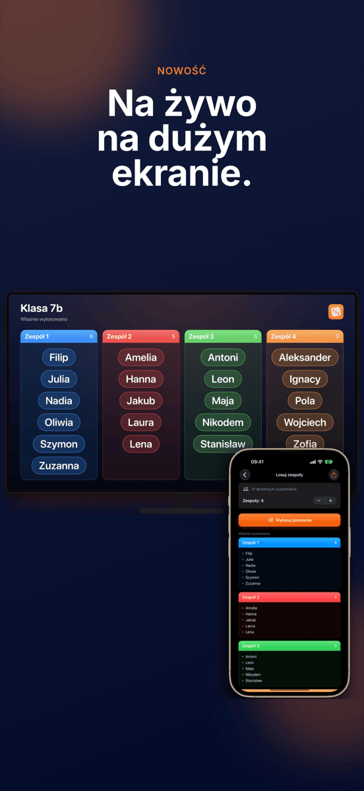
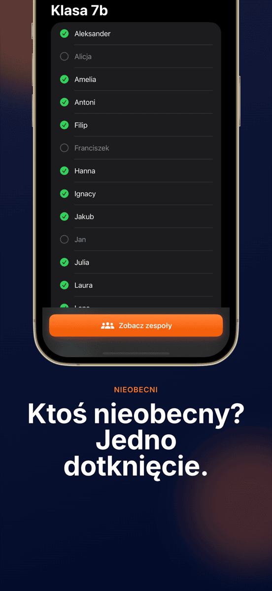
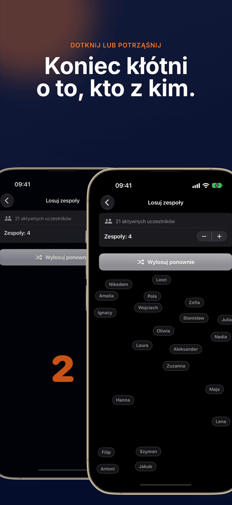
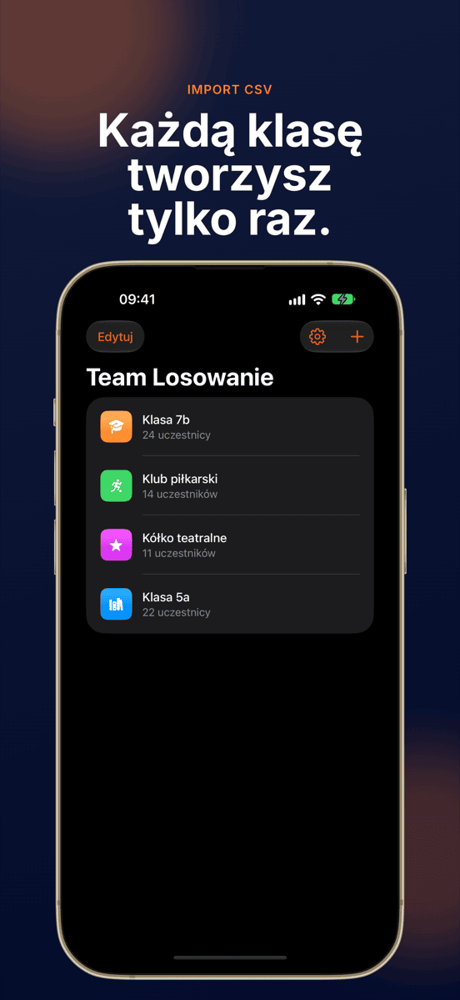
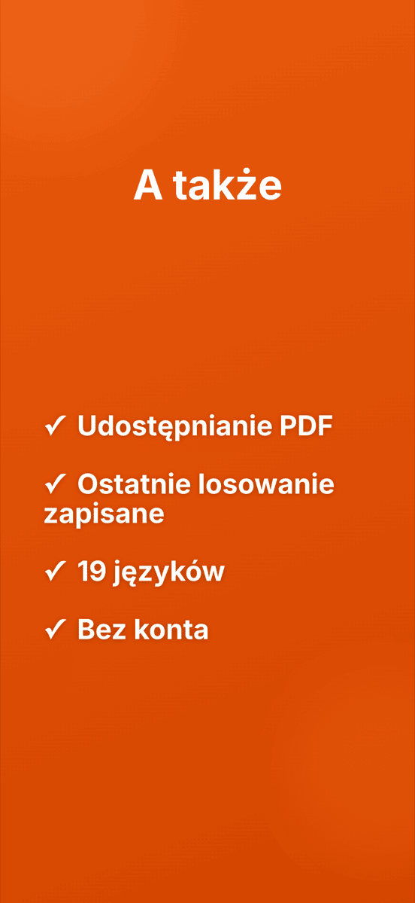

NOWOŚĆNa żywo na dużym ekranie
Team Losowanie
Sprawiedliwe zespoły. W sekundę.







Zespoły bez kłótni.
Na żywo na dużym ekranie
Przez AirPlay lub kabel cała klasa widzi, jak powstają zespoły.
Jedno dotknięcie i gotowe
Wszyscy trafiają losowo i równo do zespołów.
Grupy zostają zapisane
Utwórz klasę, drużynę lub klub raz i losuj, ile razy chcesz. Każda grupa pamięta ostatnie losowanie.
Nieobecny? Nie losuje
Odznacz nieobecnych jednym dotknięciem, a losowanie ich pominie.
Dowolna liczba zespołów
Pary, trójki, czwórki albo większe zespoły.
Mieszanie na oczach wszystkich
Animacja miesza wszystkie imiona tak, że każdy to widzi. Potrząśnięcie urządzeniem zaczyna nową rundę.
To takie proste.
Utwórz grupę
Wpisz imiona albo zaimportuj plik CSV.
Odznacz nieobecnych
Jedno dotknięcie na każdą osobę, której dziś nie ma.
Losuj
Wybierz liczbę zespołów, dotknij i patrz.
Pokaż
Na projektorze albo jako PDF.
Poradnik
Częste pytania
Jak losowo podzielić grupę na zespoły?
Utwórz grupę raz w Team Losowanie, dodaj uczestników i rozpocznij losowanie. Aplikacja rozdzieli wszystkich losowo i równo na wybraną liczbę zespołów.
Dla kogo jest Team Losowanie?
Dla wszystkich, którzy często dzielą grupy na zespoły: nauczycieli, trenerów, prowadzących warsztaty, klubów i organizatorów wydarzeń.
Czy mogę sam wybrać liczbę zespołów?
Tak. Sam wybierasz, ile ma być zespołów, od par po duże drużyny, a Team Losowanie rozdziela uczestników równo.
Czy moje dane są zapisywane lub przesyłane?
Wszystkie grupy i imiona zostają wyłącznie na Twoim urządzeniu. Żadne dane nie trafiają na serwer.
Czy mogę zaimportować listy imion z Excela?
Tak. Wyeksportuj listę jako CSV z Excela lub Arkuszy Google i zaimportuj ją do Team Losowanie. Cała klasa jest gotowa w kilka sekund.
Czy mogę pokazać losowanie na projektorze?
Tak. Gdy iPhone lub iPad jest połączony z projektorem, Apple TV lub monitorem przez AirPlay lub kabel, Team Losowanie pokazuje tam losowanie na żywo, w poziomie. Aplikację nadal obsługujesz na swoim urządzeniu.
Ile kosztuje Team Losowanie?
Pobranie i pierwsze losowanie są bezpłatne. Do kolejnych losowań potrzebna jest subskrypcja Pro, miesięczna lub roczna, którą możesz najpierw wypróbować za darmo. Team Losowanie działa na iPhonie i iPadzie z iOS 17 lub nowszym.